The second edition of Think Complexity is available from Bookshop.org and Amazon (those are affiliate links). If you are enjoying the free, online version, consider buying me a coffee.
9. Agent-based models#
The models we have seen so far might be characterized as “rule-based” in the sense that they involve systems governed by simple rules. In this and the following chapters, we explore agent-based models.
Agent-based models include agents that are intended to model people and other entities that gather information about the world, make decisions, and take actions.
The agents are usually situated in space or in a network, and interact with each other locally. They usually have imperfect or incomplete information about the world.
Often there are differences among agents, unlike previous models where all components are identical. And agent-based models often include randomness, either among the agents or in the world.
Since the 1970s, agent-based modeling has become an important tool in economics, other social sciences, and some natural sciences.
Agent-based models are useful for modeling the dynamics of systems that are not in equilibrium (although they are also used to study equilibrium). And they are particularly useful for understanding relationships between individual decisions and system behavior.
Click here to run this notebook on Colab.
import matplotlib.pyplot as plt
import numpy as np
Show code cell content
from os.path import basename, exists
def download(url):
filename = basename(url)
if not exists(filename):
from urllib.request import urlretrieve
local, _ = urlretrieve(url, filename)
print('Downloaded ' + local)
download('https://github.com/AllenDowney/ThinkComplexity/raw/v3/nb/utils.py')
download('https://github.com/AllenDowney/ThinkComplexity/raw/v3/nb/Cell2D.py')
from utils import decorate, savefig
# make a directory for figures
!mkdir -p figs
try:
import empiricaldist
except ImportError:
!pip install empiricaldist
9.1. Schelling’s Model#
In 1969 Thomas Schelling published “Models of Segregation”, which proposed a simple model of racial segregation. You can read it at https://thinkcomplex.com/schell.
The Schelling model of the world is a grid where each cell represents a house. The houses are occupied by two kinds of agents, labeled red and blue, in roughly equal numbers. About 10% of the houses are empty.
At any point in time, an agent might be happy or unhappy, depending on the other agents in the neighborhood, where the “neighborhood” of each house is the set of eight adjacent cells. In one version of the model, agents are happy if they have at least two neighbors like themselves, and unhappy if they have one or zero.
The simulation proceeds by choosing an agent at random and checking to see whether they are happy. If so, nothing happens; if not, the agent chooses one of the unoccupied cells at random and moves.
You will not be surprised to hear that this model leads to some segregation, but you might be surprised by the degree. From a random starting point, clusters of similar agents form almost immediately. The clusters grow and coalesce over time until there are a small number of large clusters and most agents live in homogeneous neighborhoods.
If you did not know the process and only saw the result, you might assume that the agents were racist, but in fact all of them would be perfectly happy in a mixed neighborhood. Since they prefer not to be greatly outnumbered, they might be considered mildly xenophobic. Of course, these agents are a wild simplification of real people, so it may not be appropriate to apply these descriptions at all.
Racism is a complex human problem; it is hard to imagine that such a simple model could shed light on it. But in fact it provides a strong argument about the relationship between a system and its parts: if you observe segregation in a real city, you cannot conclude that individual racism is the immediate cause, or even that the people in the city are racists.
Of course, we have to keep in mind the limitations of this argument: Schelling’s model demonstrates a possible cause of segregation, but says nothing about actual causes.
9.2. Implementation of Schelling’s model#
To implement Schelling’s model, I wrote yet another class that inherits from Cell2D. First, here’s a custom color map for drawing it:
import seaborn as sns
from matplotlib.colors import LinearSegmentedColormap
# make a custom color map
palette = sns.color_palette('muted')
colors = 'white', palette[1], palette[0]
cmap = LinearSegmentedColormap.from_list('cmap', colors)
And here’s the class definition:
from scipy.signal import correlate2d
from Cell2D import Cell2D, draw_array
class Schelling(Cell2D):
"""Represents a grid of Schelling agents."""
options = dict(mode='same', boundary='wrap')
kernel = np.array([[1, 1, 1],
[1, 0, 1],
[1, 1, 1]], dtype=np.int8)
def __init__(self, n, p):
"""Initializes the attributes.
n: number of rows
p: threshold on the fraction of similar neighbors
"""
self.p = p
# 0 is empty, 1 is red, 2 is blue
choices = np.array([0, 1, 2], dtype=np.int8)
probs = [0.1, 0.45, 0.45]
self.array = np.random.choice(choices, (n, n), p=probs)
n is the size of the grid, and p is the threshold on the fraction of similar neighbors. For example, if p=0.3, an agent will be unhappy if fewer than 30% of their neighbors are the same color.
array is a NumPy array where each cell is 0 if empty, 1 if occupied by a red agent, and 2 if occupied by a blue agent. Initially 10% of the cells are empty, 45% red, and 45% blue.
The step function for Schelling’s model is substantially more complicated than previous examples. If you are not interested in the details, you can skip to the next section. But if you stick around, you might pick up some NumPy tips.
The first part of the work is in count_neighbors:
%%add_method_to Schelling
def count_neighbors(self):
"""Surveys neighboring cells.
returns: tuple of
empty: True where cells are empty
frac_red: fraction of red neighbors around each cell
frac_blue: fraction of blue neighbors around each cell
frac_same: fraction of neighbors with the same color
"""
a = self.array
empty = a==0
red = a==1
blue = a==2
# count red neighbors, blue neighbors, and total
num_red = correlate2d(red, self.kernel, **self.options)
num_blue = correlate2d(blue, self.kernel, **self.options)
num_neighbors = num_red + num_blue
# compute fraction of similar neighbors
frac_red = num_red / num_neighbors
frac_blue = num_blue / num_neighbors
# no neighbors is considered the same as no similar neighbors
# (this is an arbitrary choice for a rare event)
frac_red[num_neighbors == 0] = 0
frac_blue[num_neighbors == 0] = 0
# for each cell, compute the fraction of neighbors with the same color
frac_same = np.where(red, frac_red, frac_blue)
# for empty cells, frac_same is NaN
frac_same[empty] = np.nan
return empty, frac_red, frac_blue, frac_same
First, it makes boolean arrays that indicate which cells are red, blue, and empty.
Then it uses correlate2d to count, for each location, the number of neighboring cells that are red, blue, and non-empty. We saw correlate2d in Chapter 6.
options is a dictionary that contains the options we pass to correlate2d. With mode='same', the result is the same size as the input. With boundary='wrap', the top edge is wrapped to meet the bottom, and the left edge is wrapped to meet the right.
kernel indicates that we want to consider the eight neighbors that surround each cell.
After computing num_red and num_blue, we can compute the fraction of neighbors, for each location, that are red and blue.
Then, we can compute the fraction of neighbors, for each agent, that are the same color as the agent. I use np.where, which is like an element-wise if expression. The first parameter is a condition that selects elements from the second or third parameter.
In this case, wherever red is True, frac_same gets the corresponding element of frac_red. Where red is False, frac_same gets the corresponding element of frac_blue. Finally, where empty indicates that a cell is empty, frac_same is set to np.nan, which is a special value that indicates “Not a Number”.
As the simulation runs, we can compute the degree of segregation, which is the average, across agents, of the fraction of neighbors who are the same color as the agent:
%%add_method_to Schelling
def segregation(self):
"""Computes the average fraction of similar neighbors.
returns: fraction of similar neighbors, averaged over cells
"""
_, _, _, frac_same = self.count_neighbors()
return np.nanmean(frac_same)
Now we can identify the locations of the unhappy agents and move them. step uses locs_where, which is a wrapper function for np.nonzero:
def locs_where(condition):
"""Find cells where a logical array is True.
condition: logical array
returns: list of location tuples
"""
return list(zip(*np.nonzero(condition)))
np.nonzero takes an array and returns the coordinates of all non-zero cells; the result is a tuple of arrays, one for each dimension. Then locs_where uses list and zip to convert this result to a list of coordinate pairs.
Here’s step:
%%add_method_to Schelling
def step(self):
"""Executes one time step.
returns: fraction of similar neighbors, averaged over cells
"""
a = self.array
empty, _, _, frac_same = self.count_neighbors()
# find the unhappy cells (ignore NaN in frac_same)
with np.errstate(invalid='ignore'):
unhappy = frac_same < self.p
unhappy_locs = locs_where(unhappy)
# find the empty cells
empty_locs = locs_where(empty)
# shuffle the unhappy cells
if len(unhappy_locs):
np.random.shuffle(unhappy_locs)
# for each unhappy cell, choose a random destination
num_empty = np.sum(empty)
for source in unhappy_locs:
i = np.random.randint(num_empty)
dest = empty_locs[i]
# move
a[dest] = a[source]
a[source] = 0
empty_locs[i] = source
# check that the number of empty cells is unchanged
num_empty2 = np.sum(a==0)
assert num_empty == num_empty2
# return the average fraction of similar neighbors
return np.nanmean(frac_same)
empty_locs is a list that contains the coordinates of the empty cells.
Now we get to the core of the simulation. We loop through the unhappy agents and move them. i is the index of a random empty cell; dest is a tuple containing the coordinates of the empty cell.
In order to move an agent, we copy its value (1 or 2) from source to dest, and then set the value of source to 0 (since it is now empty).
Finally, we replace the entry in empty_locs with source, so the cell that just became empty can be chosen by the next agent.
The last method draws the grid:
%%add_method_to Schelling
def draw(self):
"""Draws the cells."""
return draw_array(self.array, cmap=cmap, vmax=2)
Here’s a small example.
grid = Schelling(n=10, p=0.3)
grid.draw()
grid.segregation()
np.float64(0.4801075268817203)
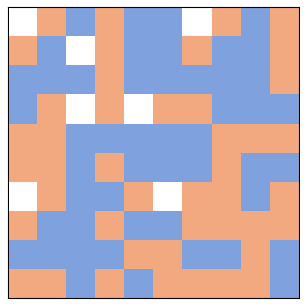
9.3. Segregation#
Now let’s see what happens when we run the model. I’ll start with n=100 and p=0.3. Here’s an animation:
grid = Schelling(n=100, p=0.3)
grid.animate(frames=30, interval=0.1)
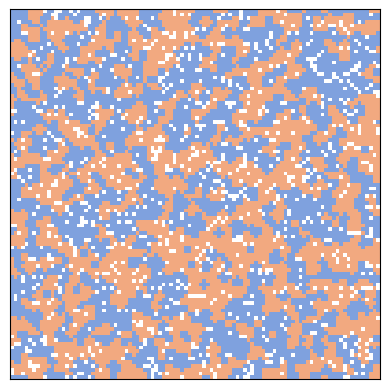
The following figure shows the initial configuration (left), the state of the simulation after 2 steps (middle), and the state after 10 steps (right).
from utils import three_frame
grid = Schelling(n=100, p=0.3)
three_frame(grid, [0, 2, 8])
savefig('figs/chap09-1')
Saving figure to file figs/chap09-1
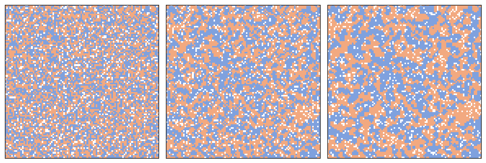
Clusters form almost immediately and grow quickly, until most agents live in highly-segregated neighborhoods.
In the initial configuration, the average fraction of similar neighbors is about 50%, as we expect for a random arrangement. After 10 steps, it is:
grid.segregation()
np.float64(0.7462857513474592)
About 75%!
Remember that when p=0.3 the agents would be happy if 3 of 8 neighbors were their own color, but they end up living in neighborhoods where 6 or 7 of their neighbors are their own color, typically.
The following figure shows how the degree of segregation increases and where it levels off for several values of p.
from utils import set_palette
set_palette('Blues', 5, reverse=True)
np.random.seed(17)
for p in [0.5, 0.4, 0.3, 0.2]:
grid = Schelling(n=100, p=p)
segs = [grid.step() for i in range(12)]
plt.plot(segs, label='p = %.1f' % p)
print(p, segs[-1], segs[-1] - p)
decorate(xlabel='Time steps', ylabel='Segregation',
loc='lower right', ylim=[0, 1])
savefig('figs/chap09-2')
0.5 0.8707797990077598 0.3707797990077598
0.4 0.8181252110773387 0.4181252110773387
0.3 0.7538847395404771 0.4538847395404771
0.2 0.5729593164353953 0.3729593164353953
Saving figure to file figs/chap09-2
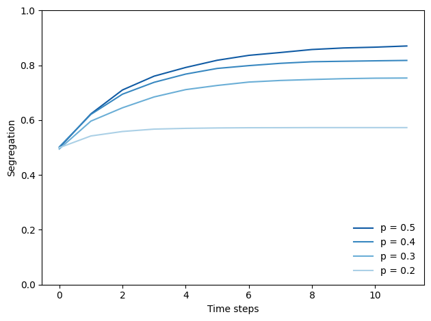
When p=0.4, the degree of segregation in steady state is about 82%, and a majority of agents have no neighbors with a different color.
At p=0.3, there is a striking difference between the level that would make people happy, at only 30%, and the level they actually get, around 75%.
These results are surprising to many people, and they make a striking example of the unpredictable relationship between individual decisions and system behavior.
Exercise: Experiment with different starting conditions: for example, more or fewer empty cells, or unequal numbers of red and blue agents.
9.4. Sugarscape#
In 1996 Joshua Epstein and Robert Axtell proposed Sugarscape, an agent-based model of an “artificial society” intended to support experiments related to economics and other social sciences.
Sugarscape is a versatile model that has been adapted for a wide variety of topics. As examples, I will replicate the first few experiments from Epstein and Axtell’s book, Growing Artificial Societies.
In its simplest form, Sugarscape is a model of a simple economy where agents move around on a 2-D grid, harvesting and accumulating “sugar”, which represents economic wealth. Some parts of the grid produce more sugar than others, and some agents are better at finding it than others.
This version of Sugarscape is often used to explore and explain the distribution of wealth, in particular the tendency toward inequality.
In the Sugarscape grid, each cell has a capacity, which is the maximum amount of sugar it can hold. In the original configuration, there are two high-sugar regions, with capacity 4, surrounded by concentric rings with capacities 3, 2, and 1.
Initially there are 400 agents placed at random locations. Each agent has three randomly-chosen attributes:
Sugar: Each agent starts with an endowment of sugar chosen from a uniform distribution between 5 and 25 units.
Metabolism: Each agent has some amount of sugar they must consume per time step, chosen uniformly between 1 and 4.
Vision: Each agent can “see” the amount of sugar in nearby cells and move to the cell with the most, but some agents can see and move farther than others. The distance agents see is chosen uniformly between 1 and 6.
During each time step, agents move one at a time in a random order. Each agent follows these rules:
The agent surveys
kcells in each of the 4 compass directions, wherekis the range of the agent’s vision.It chooses the unoccupied cell with the most sugar. In case of a tie, it chooses the closer cell; among cells at the same distance, it chooses randomly.
The agent moves to the selected cell and harvests the sugar, adding the harvest to its accumulated wealth and leaving the cell empty.
The agent consumes some part of its wealth, depending on its metabolism. If the resulting total is negative, the agent “starves” and is removed.
After all agents have executed these steps, the cells grow back some sugar, typically 1 unit, but the total sugar in each cell is bounded by its capacity.
9.5. Implementing Sugarscape#
Sugarscape is more complicated than the previous models, so I’ll outline the structure of the code before we run it. If you are not interested in the details, you can skip to the results at the end of this section.
During each step, the agent moves, harvests sugar, and ages. Here is the Agent class:
class Agent:
def __init__(self, loc, params):
"""Creates a new agent at the given location.
loc: tuple coordinates
params: dictionary of parameters
"""
self.loc = tuple(loc)
self.age = 0
# extract the parameters
max_vision = params.get('max_vision', 6)
max_metabolism = params.get('max_metabolism', 4)
min_lifespan = params.get('min_lifespan', 10000)
max_lifespan = params.get('max_lifespan', 10000)
min_sugar = params.get('min_sugar', 5)
max_sugar = params.get('max_sugar', 25)
# choose attributes
self.vision = np.random.randint(1, max_vision+1)
self.metabolism = np.random.uniform(1, max_metabolism)
self.lifespan = np.random.uniform(min_lifespan, max_lifespan)
self.sugar = np.random.uniform(min_sugar, max_sugar)
def step(self, env):
"""Look around, move, and harvest.
env: Sugarscape
"""
self.loc = env.look_and_move(self.loc, self.vision)
self.sugar += env.harvest(self.loc) - self.metabolism
self.age += 1
def is_starving(self):
"""Checks if sugar has gone negative."""
return self.sugar < 0
def is_old(self):
"""Checks if lifespan is exceeded."""
return self.age > self.lifespan
The parameter of step, env, is a reference to the environment, which is a Sugarscape object. It provides methods look_and_move and harvest:
look_and_movetakes the location of the agent, which is a tuple of coordinates, and the range of the agent’s vision, which is an integer. It returns the agent’s new location, which is the visible cell with the most sugar.harvesttakes the (new) location of the agent, and removes and returns the sugar at that location.
Sugarscape inherits from Cell2D, so it is similar to the other grid-based models we’ve seen.
The attributes include agents, which is a list of Agent objects, and occupied, which is a set of tuples, where each tuple contains the coordinates of a cell occupied by an agent.
Here is the Sugarscape class:
class Sugarscape(Cell2D):
"""Represents an Epstein-Axtell Sugarscape."""
def __init__(self, n, **params):
"""Initializes the attributes.
n: number of rows and columns
params: dictionary of parameters
"""
self.n = n
self.params = params
# track variables
self.agent_count_seq = []
# make the capacity array
self.capacity = self.make_capacity()
# initially all cells are at capacity
self.array = self.capacity.copy()
# make the agents
self.make_agents()
def make_capacity(self):
"""Makes the capacity array."""
# compute the distance of each cell from the peaks.
dist1 = distances_from(self.n, 15, 15)
dist2 = distances_from(self.n, 35, 35)
dist = np.minimum(dist1, dist2)
# cells in the capacity array are set according to dist from peak
bins = [21, 16, 11, 6]
a = np.digitize(dist, bins)
return a
def make_agents(self):
"""Makes the agents."""
# determine where the agents start and generate locations
n, m = self.params.get('starting_box', self.array.shape)
locs = make_locs(n, m)
np.random.shuffle(locs)
# make the agents
num_agents = self.params.get('num_agents', 400)
assert(num_agents <= len(locs))
self.agents = [Agent(locs[i], self.params)
for i in range(num_agents)]
# keep track of which cells are occupied
self.occupied = set(agent.loc for agent in self.agents)
def grow(self):
"""Adds sugar to all cells and caps them by capacity."""
grow_rate = self.params.get('grow_rate', 1)
self.array = np.minimum(self.array + grow_rate, self.capacity)
def look_and_move(self, center, vision):
"""Finds the visible cell with the most sugar.
center: tuple, coordinates of the center cell
vision: int, maximum visible distance
returns: tuple, coordinates of best cell
"""
# find all visible cells
locs = make_visible_locs(vision)
locs = (locs + center) % self.n
# convert rows of the array to tuples
locs = [tuple(loc) for loc in locs]
# select unoccupied cells
empty_locs = [loc for loc in locs if loc not in self.occupied]
# if all visible cells are occupied, stay put
if len(empty_locs) == 0:
return center
# look up the sugar level in each cell
t = [self.array[loc] for loc in empty_locs]
# find the best one and return it
# (in case of tie, argmax returns the first, which
# is the closest)
i = np.argmax(t)
return empty_locs[i]
def harvest(self, loc):
"""Removes and returns the sugar from `loc`.
loc: tuple coordinates
"""
sugar = self.array[loc]
self.array[loc] = 0
return sugar
def step(self):
"""Executes one time step."""
replace = self.params.get('replace', False)
# loop through the agents in random order
random_order = np.random.permutation(self.agents)
for agent in random_order:
# mark the current cell unoccupied
self.occupied.remove(agent.loc)
# execute one step
agent.step(self)
# if the agent is dead, remove from the list
if agent.is_starving() or agent.is_old():
self.agents.remove(agent)
if replace:
self.add_agent()
else:
# otherwise mark its cell occupied
self.occupied.add(agent.loc)
# update the time series
self.agent_count_seq.append(len(self.agents))
# grow back some sugar
self.grow()
return len(self.agents)
def add_agent(self):
"""Generates a new random agent.
returns: new Agent
"""
new_agent = Agent(self.random_loc(), self.params)
self.agents.append(new_agent)
self.occupied.add(new_agent.loc)
return new_agent
def random_loc(self):
"""Choose a random unoccupied cell.
returns: tuple coordinates
"""
while True:
loc = tuple(np.random.randint(self.n, size=2))
if loc not in self.occupied:
return loc
def draw(self):
"""Draws the cells."""
draw_array(self.array, cmap='YlOrRd', vmax=9, origin='lower')
# draw the agents
xs, ys = self.get_coords()
self.points = plt.plot(xs, ys, '.', color='red')[0]
def get_coords(self):
"""Gets the coordinates of the agents.
Transforms from (row, col) to (x, y).
returns: tuple of sequences, (xs, ys)
"""
agents = self.agents
rows, cols = np.transpose([agent.loc for agent in agents])
xs = cols + 0.5
ys = rows + 0.5
return xs, ys
During each step, the Sugarscape uses the NumPy function permutation so it loops through the agents in random order. It invokes step on each agent and then checks whether it is dead. After all agents have moved, some of the sugar grows back. The return value is the number of agents still alive.
Sugarscape uses several helper functions, which are defined below. If you want to learn more about NumPy, you might want to look at these functions in particular:
make_visible_locs, which builds the array of locations an agent can see, depending on its vision. The locations are sorted by distance, with locations at the same distance appearing in random order. This function usesnp.random.shuffleandnp.vstack.make_capacity, which initializes the capacity of the cells using NumPy functionsindices,hypot,minimum, anddigitize.look_and_move, which usesargmax.
make_locs takes the dimensions of the grid and returns an array where each row is a coordinate in the grid.
def make_locs(n, m):
"""Makes array where each row is an index in an `n` by `m` grid.
n: int number of rows
m: int number of cols
returns: NumPy array
"""
t = [(i, j) for i in range(n) for j in range(m)]
return np.array(t)
make_locs(2, 3)
array([[0, 0],
[0, 1],
[0, 2],
[1, 0],
[1, 1],
[1, 2]])
make_visible_locs takes the range of an agent’s vision and returns an array where each row is the coordinate of a visible cell.
The cells are at increasing distances. The cells at each distance are shuffled.
def make_visible_locs(vision):
"""Computes the kernel of visible cells.
vision: int distance
"""
def make_array(d):
"""Generates visible cells with increasing distance."""
a = np.array([[-d, 0], [d, 0], [0, -d], [0, d]])
np.random.shuffle(a)
return a
arrays = [make_array(d) for d in range(1, vision+1)]
return np.vstack(arrays)
make_visible_locs(2)
array([[ 0, 1],
[ 1, 0],
[ 0, -1],
[-1, 0],
[ 0, -2],
[-2, 0],
[ 0, 2],
[ 2, 0]])
distances_from returns an array that contains the distance of each cell from the given coordinates.
def distances_from(n, i, j):
"""Computes an array of distances.
n: size of the array
i, j: coordinates to find distance from
returns: array of float
"""
X, Y = np.indices((n, n))
return np.hypot(X-i, Y-j)
dist = distances_from(5, 2, 2)
dist
array([[2.82842712, 2.23606798, 2. , 2.23606798, 2.82842712],
[2.23606798, 1.41421356, 1. , 1.41421356, 2.23606798],
[2. , 1. , 0. , 1. , 2. ],
[2.23606798, 1.41421356, 1. , 1.41421356, 2.23606798],
[2.82842712, 2.23606798, 2. , 2.23606798, 2.82842712]])
make_capacity uses np.digitize to set the capacity in each cell according to the distance from the peak. Here’s an example that shows how it works.
bins = [3, 2, 1, 0]
np.digitize(dist, bins)
array([[1, 1, 1, 1, 1],
[1, 2, 2, 2, 1],
[1, 2, 3, 2, 1],
[1, 2, 2, 2, 1],
[1, 1, 1, 1, 1]])
Now let’s run it. Here’s an example with n=50, starting with 400 agents.
env = Sugarscape(50, num_agents=400)
env.draw()
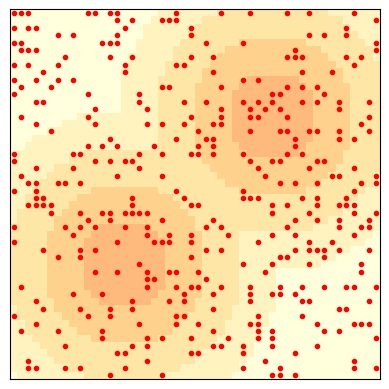
The distribution of vision is uniform from 1 to 6.
from empiricaldist import Cdf
cdf = Cdf.from_seq(agent.vision for agent in env.agents)
cdf.plot()
decorate(xlabel='Vision', ylabel='CDF')
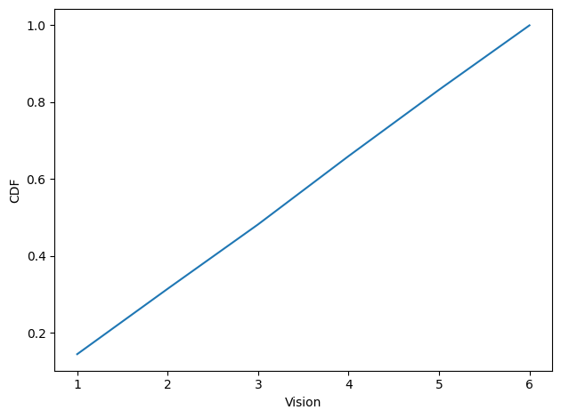
The distribution of metabolism is uniform from 1 to 4.
cdf = Cdf.from_seq(agent.metabolism for agent in env.agents)
cdf.plot()
decorate(xlabel='Metabolism', ylabel='CDF')
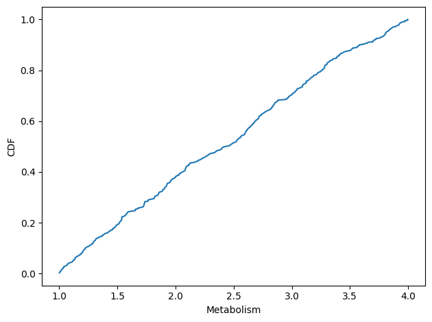
The distribution of initial endowment of sugar is uniform from 5 to 25.
cdf = Cdf.from_seq(agent.sugar for agent in env.agents)
cdf.plot()
decorate(xlabel='Sugar', ylabel='CDF')
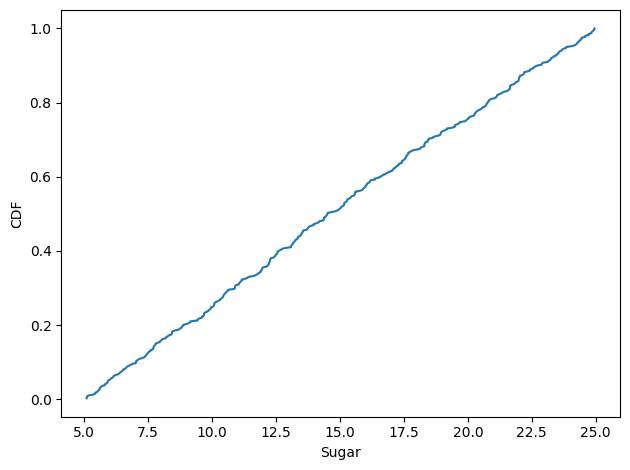
env.step()
env.draw()
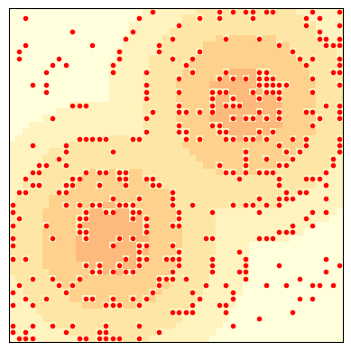
Here’s what the animation looks like.
env.animate(frames=50)
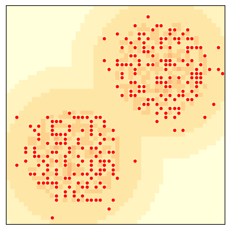
When sugar grows back at 1 unit per time step, there is not enough sugar to sustain the 400 agents we started with. The population drops quickly at first, then more slowly, and levels off around 250.
len(env.agents)
268
plt.plot(env.agent_count_seq)
decorate(xlabel='Time steps', ylabel='Number of Agents')
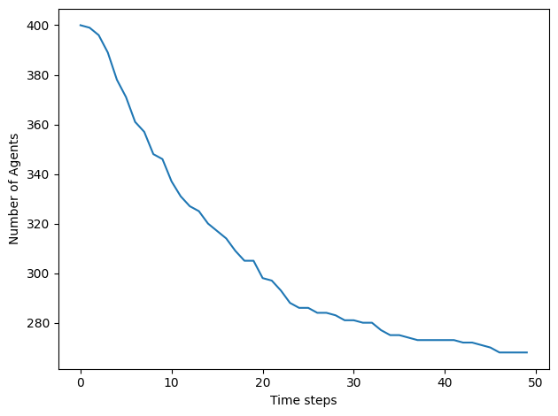
The following figure shows the initial configuration (left), with the darker areas indicating cells with higher capacity, and small dots representing the agents; the state of the model after 2 steps (middle); and after 100 steps (right).
env = Sugarscape(50, num_agents=400)
three_frame(env, [0, 2, 98])
savefig('figs/chap09-3')
Saving figure to file figs/chap09-3
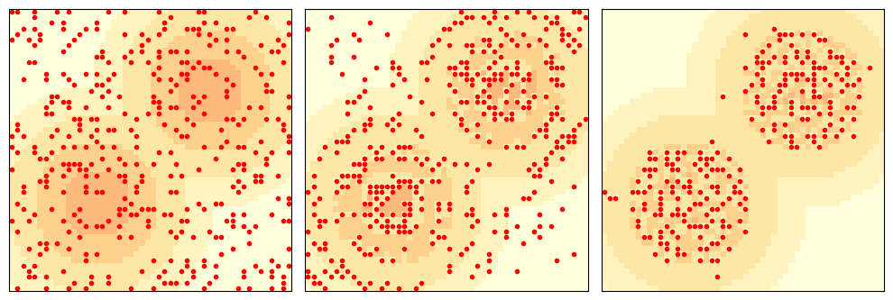
After two steps, most agents are moving toward the areas with the most sugar. Agents with high vision move the fastest; agents with low vision tend to get stuck on the plateaus, wandering randomly until they get close enough to see the next level.
Agents born in the areas with the least sugar are likely to starve unless they have a high initial endowment and high vision.
Within the high-sugar areas, agents compete with each other to find and harvest sugar as it grows back. Agents with high metabolism or low vision are the most likely to starve.
After 100 time steps, about 250 agents are left. The agents who survive tend to be the lucky ones, born with high vision and/or low metabolism. Having survived to this point, they are likely to survive forever, accumulating unbounded stockpiles of sugar.
Exercise: Experiment with different numbers of agents. Try increasing or decreasing their vision or metabolism, and see what effect it has on carrying capacity.
9.6. Wealth inequality#
In its current form, Sugarscape models a simple ecology, and could be used to explore the relationship between the parameters of the model, like the growth rate and the attributes of the agents, and the carrying capacity of the system (the number of agents that survive in steady state). And it models a form of natural selection, where agents with higher “fitness” are more likely to survive.
The model also demonstrates a kind of wealth inequality, with some agents accumulating sugar faster than others. But it would be hard to say anything specific about the distribution of wealth because it is not “stationary”; that is, the distribution changes over time and does not reach a steady state.
However, if we give the agents finite lifespans, the model produces a stationary distribution of wealth. Then we can run experiments to see what effect the parameters and rules have on this distribution.
In this version of the model, agents have an age that gets incremented each time step, and a random lifespan chosen from a uniform distribution between 60 and 100. If an agent’s age exceeds its lifespan, it dies.
When an agent dies, from starvation or old age, it is replaced by a new agent with random attributes, so the number of agents is constant.
env = Sugarscape(50,
num_agents=250,
min_lifespan=60,
max_lifespan=100,
replace=True)
env.animate(frames=100)
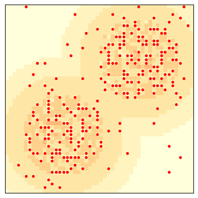
After 100 time steps, the distribution of wealth is skewed to the right. Most agents have very little sugar, but a few have a lot.
cdf = Cdf.from_seq(agent.sugar for agent in env.agents)
cdf.plot()
decorate(xlabel='Wealth', ylabel='CDF')
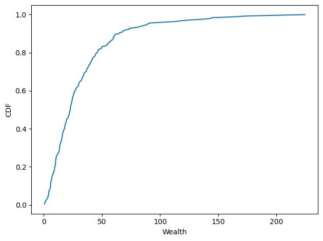
cdf.quantile([0.25, 0.50, 0.75, 0.90])
array([10.78996198, 22.86265585, 40.75981206, 64.52552842])
Starting with 250 agents (which is close to carrying capacity) I run the model for 500 steps. After each 100 steps, I compute the cumulative distribution function (CDF) of sugar accumulated by the agents. We saw CDFs in Chapter 4.
np.random.seed(17)
env = Sugarscape(50, num_agents=250,
min_lifespan=60, max_lifespan=100,
replace=True)
cdf = Cdf.from_seq(agent.sugar for agent in env.agents)
cdfs = [cdf]
for i in range(5):
env.loop(100)
cdf = Cdf.from_seq(agent.sugar for agent in env.agents)
cdfs.append(cdf)
The following figure shows the distribution of sugar (wealth) after 100, 200, 300, and 400 steps (gray lines) and 500 steps (dark line), on a linear scale (left) and a log-x scale (right).
plt.figure(figsize=(10, 6))
plt.subplot(1, 2, 1)
def plot_cdfs(cdfs, **options):
for cdf in cdfs:
cdf.plot(**options)
plot_cdfs(cdfs[:-1], color='gray', alpha=0.3)
plot_cdfs(cdfs[-1:], color='C0')
decorate(xlabel='Wealth', ylabel='CDF')
plt.subplot(1, 2, 2)
plot_cdfs(cdfs[:-1], color='gray', alpha=0.3)
plot_cdfs(cdfs[-1:], color='C0')
decorate(xlabel='Wealth', ylabel='CDF', xscale='log')
savefig('figs/chap09-4')
Saving figure to file figs/chap09-4
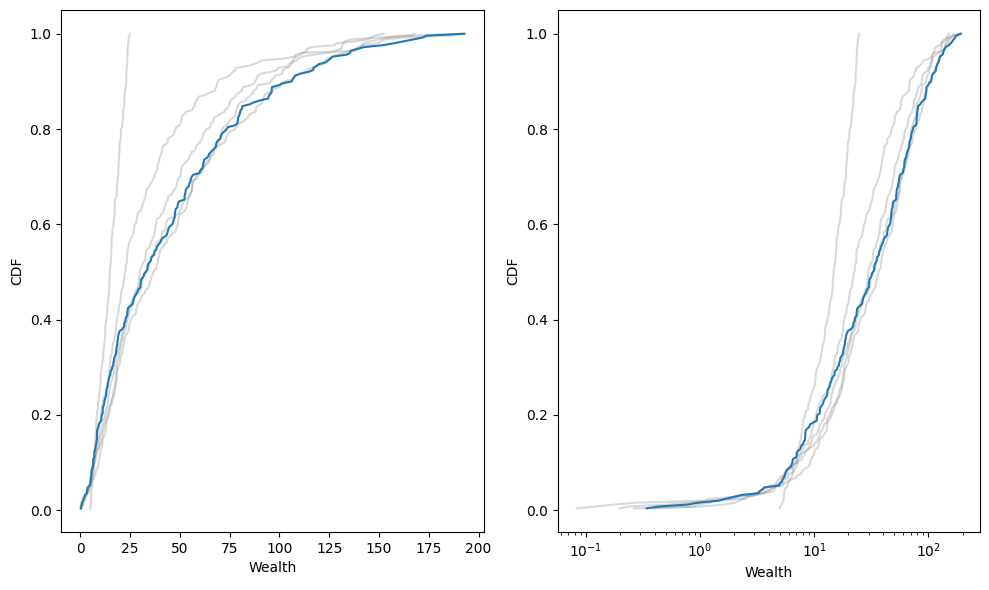
After about 200 steps (which is twice the longest lifespan) the distribution doesn’t change much. And it is skewed to the right.
Most agents have little accumulated wealth: the 25th percentile is about 10 and the median is about 20. But a few agents have accumulated much more: the 75th percentile is about 40, and the highest value is more than 150.
On a log scale the shape of the distribution resembles a Gaussian or normal distribution, although the right tail is truncated. If it were actually normal on a log scale, the distribution would be lognormal, which is a heavy-tailed distribution. And in fact, the distribution of wealth in practically every country, and in the world, is a heavy-tailed distribution.
It would be too much to claim that Sugarscape explains why wealth distributions are heavy-tailed, but the prevalence of inequality in variations of Sugarscape suggests that inequality is characteristic of many economies, even very simple ones. And experiments with rules that model taxation and other income transfers suggest that it is not easy to avoid or mitigate.
Exercise: Experiment with different starting conditions and agents with different vision, metabolism, and lifespan. What effect do these changes have on the distribution of wealth?
9.7. Migration and Wave Behavior#
Although the purpose of Sugarscape is not primarily to explore the movement of agents in space, Epstein and Axtell observed some interesting patterns when agents migrate.
If we start with all agents in the lower-left corner, they quickly move toward the closest “peak” of high-capacity cells. But if there are more agents than a single peak can support, they quickly exhaust the sugar and agents are forced to move into lower-capacity areas.
The ones with the longest vision cross the valley between the peaks and propagate toward the northeast in a pattern that resembles a wave front. Because they leave a stripe of empty cells behind them, other agents don’t follow until the sugar grows back.
The result is a series of discrete waves of migration, where each wave resembles a coherent object, like the spaceships we saw in the Rule 110 CA and Game of Life (see Chapter 5 and Chapter 6).
Here’s an animation, where the wave patterns are clearly visible:
np.random.seed(17)
env = Sugarscape(50,
num_agents=300,
starting_box=(20, 20),
max_vision=16)
env.animate(frames=20, interval=0.4)
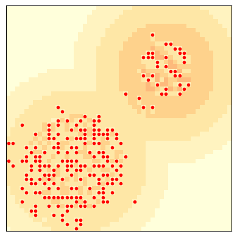
The following figure shows the initial condition (left) and the state of the model after 6 steps (middle) and 12 steps (right).
env = Sugarscape(50, num_agents=300, starting_box=(20, 20), max_vision=16)
three_frame(env, [0, 6, 6])
savefig('figs/chap09-5')
Saving figure to file figs/chap09-5
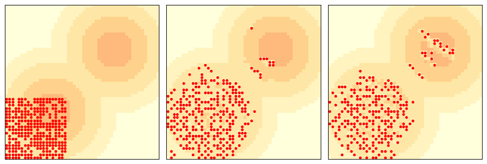
You can see the first two waves reaching and moving through the second peak, leaving a stripe of empty cells behind.
These waves move diagonally, which is surprising because the agents themselves only move north or east, never northeast. Outcomes like this — groups or “aggregates” with properties and behaviors that the agents don’t have — are common in agent-based models. We will see more examples in the next chapter.
Exercise: Again, experiment with different starting conditions and see what effect they have on the wave behavior.
9.8. Emergence#
The examples in this chapter demonstrate one of the most important ideas in complexity science: emergence. An emergent property is a characteristic of a system that results from the interaction of its components, not from their properties.
To clarify what emergence is, it helps to consider what it isn’t. For example, a brick wall is hard because bricks and mortar are hard, so that’s not an emergent property. As another example, some rigid structures are built from flexible components, so that seems like a kind of emergence. But it is at best a weak kind, because structural properties follow from well understood laws of mechanics.
In contrast, the segregation we see in Schelling’s model is an emergent property because it is not caused by racist agents. Even when the agents are only mildly xenophobic, the outcome of the system is substantially different from the intention of the agents’ decisions.
The distribution of wealth in Sugarscape might be an emergent property, but it is a weak example because we could reasonably predict it based on the distributions of vision, metabolism, and lifespan. The wave behavior we saw in the last example might be a stronger example, since the wave displays a capability — diagonal movement — that the agents do not have.
Emergent properties are surprising: it is hard to predict the behavior of the system even if we know all the rules. That difficulty is not an accident; in fact, it may be the defining characteristic of emergence.
As Wolfram discusses in A New Kind of Science, conventional science is based on the axiom that if you know the rules that govern a system, you can predict its behavior. What we call “laws” are often computational shortcuts that allow us to predict the outcome of a system without building or observing it.
But many cellular automatons are computationally irreducible, which means that there are no shortcuts. The only way to get the outcome is to implement the system.
The same may be true of complex systems in general. For physical systems with more than a few components, there is usually no model that yields an analytic solution. Numerical methods provide a kind of computational shortcut, but there is still a qualitative difference.
Analytic solutions often provide a constant-time algorithm for prediction; that is, the run time of the computation does not depend on \(t\), the time scale of prediction. But numerical methods, simulation, analog computation, and similar methods take time proportional to \(t\). And for many systems, there is a bound on \(t\) beyond which we can’t compute reliable predictions at all.
These observations suggest that emergent properties are fundamentally unpredictable, and that for complex systems we should not expect to find natural laws in the form of computational shortcuts.
To some people, “emergence” is another name for ignorance; by this reckoning, a property is emergent if we don’t have a reductionist explanation for it, but if we come to understand it better in the future, it would no longer be emergent.
The status of emergent properties is a topic of debate, so it is appropriate to be skeptical. When we see an apparently emergent property, we should not assume that there can never be a reductionist explanation. But neither should we assume that there has to be one.
The examples in this book and the principle of computational equivalence give good reasons to believe that at least some emergent properties can never be “explained” by a classical reductionist model.
You can read more about emergence at https://thinkcomplex.com/emerge.
9.9. Exercises#
Exercise: Bill Bishop, author of The Big Sort, argues that American society is increasingly segregated by political opinion, as people choose to live among like-minded neighbors.
The mechanism Bishop hypothesizes is not that people, like the agents in Schelling’s model, are more likely to move if they are isolated, but that when they move for any reason, they are likely to choose a neighborhood with people like themselves.
Write a version of Schelling’s model to simulate this kind of behavior and see if it yields similar degrees of segregation.
There are several ways you can model Bishop’s hypothesis. In my
implementation, a random selection of agents moves during each step.
Each agent considers k randomly-chosen empty locations and
chooses the one with the highest fraction of similar neighbors.
How does the degree of segregation depend on k?
You should be able to implement this model by inheriting from
Schelling and overriding __init__ and step.
Exercise: In the first version of Sugarscape, we never add agents, so once the population falls, it never recovers. In the second version, we only replace agents when they die, so the population is constant. Now let’s see what happens if we add some “population pressure”.
Write a version of Sugarscape that adds a new agent at the end of every step. Add code to compute the average vision and the average metabolism of the agents at the end of each step. Run the model for a few hundred steps and plot the population over time, as well as the average vision and average metabolism.
You should be able to implement this model by inheriting from
Sugarscape and overriding __init__ and step.
Exercise: Among people who study philosophy of mind, “Strong AI” is the theory that an appropriately-programmed computer could have a mind in the same sense that humans have minds.
John Searle presented a thought experiment called “The Chinese Room”, intended to show that Strong AI is false. You can read about it at https://thinkcomplex.com/searle.
What is the system reply to the Chinese Room argument? How does what you have learned about emergence influence your reaction to the system response?
Copyright 2016 Allen B. Downey
Code license: MIT License
Text license: Creative Commons Attribution-NonCommercial-ShareAlike 4.0 International